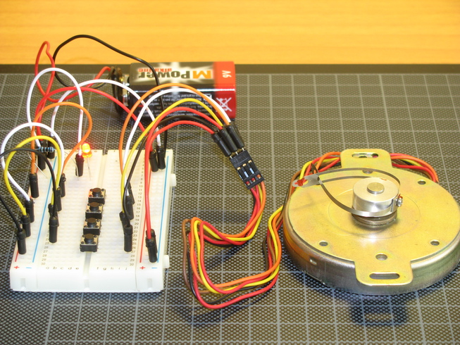
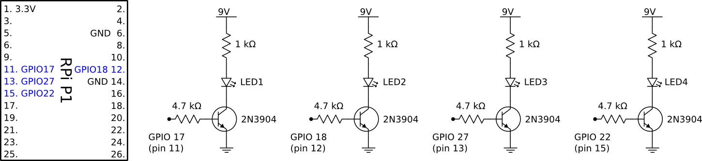
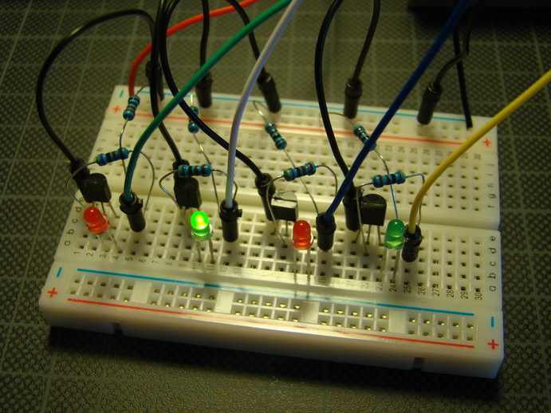

I have a unipolar stepper motor I want to control with my Raspberry Pi. First I needed to figure out the motor coils’ wiring, then I wrote a small test script to provide the correct sequence on the GPIO ports.
Wiring
I read about stepper motors, and made the following circuit on the breadboard.
A 9V battery, an indicator led to show if the power is on, and four switches. When a switch is pressed one phase (half coil) is energized. For some unknown reason I managed to get the wiring right for the first time, so pressing the switches one after the other, from top to bottom, made the motor turn one step.
The 6 wires of this motor (Japan Servo KP68P2-406, 12V, 33 Ω/phase, 1.8 deg/step) are the following:
- 2 red (center taps)
- orange (phase 1)
- brown (phase 2)
- yellow (phase 3)
- black (phase 4)
Sequence test
I wrote a small test script to output the step sequence on the Pi’s GPIO ports. It has a lot of cool features:
$ sudo python stepper_seq.py -h # help
$ sudo python stepper_seq.py # turns the motor indefinitely, Control-C terminates
$ sudo python stepper_seq.py -s half -r -n 4 # 4 times the half-step sequence, reversed
$ sudo python stepper_seq.py -s kitt # nothing to do with stepper motors ;)
And the code of stepper_seq.py:
#!/usr/bin/env python
# stepper_seq.py - Stepper motor sequence test
# Copyright (C) 2013 David Wagner
from itertools import chain, cycle, repeat
import argparse
import RPi.GPIO as GPIO
import signal
import sys
import time
sequences = {# Wave Drive, One-Phase
'one': [[True, False, False, False],
[False, True, False, False],
[False, False, True, False],
[False, False, False, True]],
# Hi-Torque, Two-Phase
'two': [[True, True, False, False],
[False, True, True, False],
[False, False, True, True],
[True, False, False, True]],
# Half-Step
'half': [[True, False, False, False],
[True, True, False, False],
[False, True, False, False],
[False, True, True, False],
[False, False, True, False],
[False, False, True, True],
[False, False, False, True],
[True, False, False, True]]}
sequences.update({'kitt': (sequences['one'][:-1] +
list(reversed(sequences['one'])))})
parser = argparse.ArgumentParser(description='Stepper motor sequence test.')
parser.add_argument('-p', '--pins', metavar='num', type=int, nargs=4,
default=[11, 12, 13, 15],
help='GPIO pins to activate (numbering by BOARD)')
parser.add_argument('-s', '--seq', type=str, default='one',
choices=sorted(sequences.keys()),
help='Coil activation sequence.')
parser.add_argument('-d', '--delay', type=float, default='0.5',
help='Delay in seconds.')
parser.add_argument('-r', '--reverse', action='store_true',
help='Reverse direction.')
parser.add_argument('-n', '--num', type=int, default=0,
help='Number of complete cycles.')
args = parser.parse_args()
def init_board():
GPIO.setmode(GPIO.BOARD)
for pin in args.pins:
GPIO.setup(pin, GPIO.OUT)
def init_pins():
for pin in args.pins:
GPIO.output(pin, False)
def signal_handler(signal, frame):
print "Interrupted. Exiting..."
init_pins()
sys.exit(0)
def ncycles(iterable, n):
"Returns the sequence elements n times"
return chain.from_iterable(repeat(tuple(iterable), n))
def step(num=0):
pin_order = list(reversed(args.pins)) if args.reverse else args.pins
rep = cycle if num == 0 else lambda it: ncycles(it, num)
for seq in rep(sequences[args.seq]):
for pin, status in zip(pin_order, seq):
GPIO.output(pin, status)
time.sleep(args.delay)
def main():
signal.signal(signal.SIGINT, signal_handler)
init_board()
init_pins()
step(args.num)
if __name__ == '__main__':
main()
Sequence test hardware
I put together a circuit to test the script above. It contains four LEDs, each connected to one of the Pi’s GPIO ports through a transistor. The LED’s could be directly connected to the IO ports, but in this project I wanted to refresh how to use a transistor as a switch so that the LEDs can be powered from an external power supply.
And on the breadboard it looks like this:
